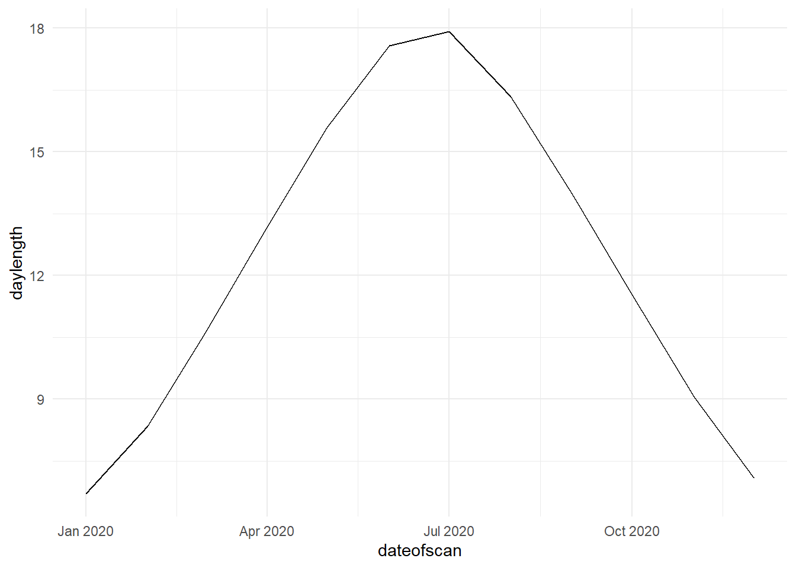

Chapter 4 Data Wrangling and manipulation
library(Hmisc) #impute values## Warning: package 'Hmisc' was built under R version 4.0.5## Loading required package: lattice## Loading required package: survival## Loading required package: Formula##
## Attaching package: 'Hmisc'## The following objects are masked from 'package:dplyr':
##
## src, summarize## The following objects are masked from 'package:base':
##
## format.pval, unitslibrary(naniar) # deal with NAs## Warning: package 'naniar' was built under R version 4.0.5library(geosphere)
library(tidyverse) # data handling and viz
library(janitor) #dataframe import cleaning
library(knitr) #nice html tables
library(kableExtra) # nicer knitr tables
library(broom)
library(readr) # load csv stored data
library(geosphere) # for calc daylength4.1 Bin variable ( e.g. Low/Medium/High)
data(mtcars)
mtcars <- mtcars %>% mutate(hp_cat=cut(hp, breaks=c(-Inf, 100, Inf),
labels=c("low hp","high hp")))4.2 Conditional function
mtcars <- mtcars %>% mutate(loghp=ifelse(cyl>4,log10(hp),NA))
# Nonsensical example, but log transformed all horse powers of cars with more
# than four cylinders4.3 Sum across rows
mtcars <- mtcars %>% mutate(sum = select(., disp:drat) %>%
apply(1, sum, na.rm=TRUE))
#apply() takes Data frame or matrix as an input and gives output in vector
#(i.e.many columns to one list)
# the '1' sets the dataframe to use (already selected here)4.4 Standardise variable
dat2 <- mtcars %>%
as_tibble() %>%
mutate(across(where(is.numeric), scale))
funcs <- list(mean = ~mean(.x,na.rm = TRUE),
sd = ~sd(.x,na.rm = TRUE)
)
dat2 %>% summarise(across(where(is.numeric),funcs))## # A tibble: 1 x 26
## mpg_mean mpg_sd cyl_mean cyl_sd disp_mean disp_sd hp_mean hp_sd drat_mean
## <dbl> <dbl> <dbl> <dbl> <dbl> <dbl> <dbl> <dbl> <dbl>
## 1 7.11e-17 1 -1.47e-17 1 -9.08e-17 1 1.04e-17 1 -2.92e-16
## # ... with 17 more variables: drat_sd <dbl>, wt_mean <dbl>, wt_sd <dbl>,
## # qsec_mean <dbl>, qsec_sd <dbl>, vs_mean <dbl>, vs_sd <dbl>, am_mean <dbl>,
## # am_sd <dbl>, gear_mean <dbl>, gear_sd <dbl>, carb_mean <dbl>,
## # carb_sd <dbl>, loghp_mean <dbl>, loghp_sd <dbl>, sum_mean <dbl>,
## # sum_sd <dbl>4.5 Conditional Replacement
Replace all ’NA’s in a specified variable with 0.
mtcars <- mtcars %>% mutate(loghp1 = coalesce(loghp, 0))
#or
mtcars <- mtcars %>% mutate(loghp = replace_na(loghp, "missing"))4.6 Filter na’s or retain complete cases
mtcars <- mtcars %>% filter(!is.na(hp)) # no missing values found
mtcars <- mtcars %>%filter(complete.cases(.)) # no missing values found4.7 Delete specified columns
mtcars1 <- mtcars %>% select(-(drat)) # single column
mtcars2 <- mtcars %>% select(-c(drat,hp,vs:gear)) # multiple columns
rm(list=setdiff(ls(), "mtcars")) # clean environment##Change specific datapoint
mtcarsmissingvalues <- mtcars %>% mutate(gear=ifelse(gear==5,"missing",gear))4.8 Find duplicate rows
# specify which variable to check for duplication
n_occur1 <- data.frame(table(mtcars$mpg))
kable(n_occur1[n_occur1$Freq > 1,]) %>% kable_styling(full_width = F) %>%
kable_minimal()| Var1 | Freq | |
|---|---|---|
| 1 | 10.4 | 2 |
| 6 | 15.2 | 2 |
| 14 | 19.2 | 2 |
| 16 | 21 | 2 |
| 17 | 21.4 | 2 |
| 19 | 22.8 | 2 |
| 23 | 30.4 | 2 |
4.9 Impute missing values
4.9.1 To be completedImputing missing values using the mean:
#create missing values
#mtcarsmissingvalues <- mtcars %>% mutate(gear=ifelse(gear==5,"",gear))
mtcarsmissingvalues <- mtcars %>% replace_with_na(replace = list(gear = 5))
mtcarsmissingvalues$gear <- impute(mtcarsmissingvalues$gear, mean) # replace with mean
mtcarsmissingvalues$gear <- impute(mtcarsmissingvalues$gear, median) # median
mtcarsmissingvalues$gear <- impute(mtcarsmissingvalues$gear, 4) # replace specific number4.10 Keep rows based on a unique value.
e.g. prescription code
mtcarsdistinct <- mtcars %>% distinct(cyl, .keep_all= TRUE)4.11 Delete rows on a variable value
mtcars1<-mtcars %>% filter(!(cyl==6))
mtcars2<-mtcars %>% filter(!(cyl==6 | hp==180)) # | is the 'or' operator
mtcars3<-mtcars %>% filter(!(cyl==8 & hp==215)) # & is the 'and' operator
# remove the ! To select the individuals with the specified conditions4.12 Use if else to calculate on values
# no NA's so all values unchanged.
mtcars <- mtcars %>% mutate(vs=ifelse(is.na(vs),(carb-am)/365.25,vs)) 4.13 Merge data frames (variables)
*left_join(x, y): returns all rows from x, and all columns from x and y. Rows in x with no match in y will have NA values in the new columns. If there are multiple matches between x and y, all combinations of the matches are returned.
*inner_join(x, y): returns all rows from x where there are matching values in y, and all columns from x and y. If there are multiple matches between x and y, all combinations of the matches are returned.
*full_join(x, y): returns all rows and all columns from both x and y. Where there are not matching values, the function returns NA for the one missing
- inner: only rows with matching keys in both x and y
- left: all rows in x, adding matching columns from y
- right: all rows in y, adding matching columns from x
- full: all rows in x with matching columns in y, then the rows of y that don’t match x.
# prepare new dataset
# make the rownames into a 'joinable' column
mtcars <- mtcars %>% mutate(carnames=rownames(mtcars))
mtcars_extradata <- mtcars %>% select(cyl)
# make the rownames into a 'joinable' column
mtcars_extradata <- mtcars_extradata %>%
mutate(carnames=rownames(mtcars_extradata))
mtcars_extradata <- mtcars_extradata %>% mutate(valves=cyl*4)
mtcars_extradata <- mtcars_extradata %>% select(-cyl)
kable(glimpse(mtcars_extradata%>% slice(1:6))) %>%
kable_styling(full_width = F) %>%
kable_minimal()## Rows: 6
## Columns: 2
## $ carnames <chr> "Mazda RX4", "Mazda RX4 Wag", "Datsun 710", "Hornet 4 Drive",~
## $ valves <dbl> 24, 24, 16, 24, 32, 24| carnames | valves | |
|---|---|---|
| Mazda RX4 | Mazda RX4 | 24 |
| Mazda RX4 Wag | Mazda RX4 Wag | 24 |
| Datsun 710 | Datsun 710 | 16 |
| Hornet 4 Drive | Hornet 4 Drive | 24 |
| Hornet Sportabout | Hornet Sportabout | 32 |
| Valiant | Valiant | 24 |
mtcars <- left_join(mtcars,mtcars_extradata,by = 'carnames')
kable(glimpse(mtcars %>%select(carb:valves) %>% slice(1:6))) %>%
kable_styling(full_width = F) %>%
kable_minimal()## Rows: 6
## Columns: 7
## $ carb <dbl> 4, 4, 1, 1, 2, 1
## $ hp_cat <fct> high hp, high hp, low hp, high hp, high hp, high hp
## $ loghp <chr> "2.04139268515822", "2.04139268515822", "missing", "2.0413926~
## $ sum <dbl> 273.90, 273.90, 204.85, 371.08, 538.15, 332.76
## $ loghp1 <dbl> 2.041393, 2.041393, 0.000000, 2.041393, 2.243038, 2.021189
## $ carnames <chr> "Mazda RX4", "Mazda RX4 Wag", "Datsun 710", "Hornet 4 Drive",~
## $ valves <dbl> 24, 24, 16, 24, 32, 24| carb | hp_cat | loghp | sum | loghp1 | carnames | valves |
|---|---|---|---|---|---|---|
| 4 | high hp | 2.04139268515822 | 273.90 | 2.041393 | Mazda RX4 | 24 |
| 4 | high hp | 2.04139268515822 | 273.90 | 2.041393 | Mazda RX4 Wag | 24 |
| 1 | low hp | missing | 204.85 | 0.000000 | Datsun 710 | 16 |
| 1 | high hp | 2.04139268515822 | 371.08 | 2.041393 | Hornet 4 Drive | 24 |
| 2 | high hp | 2.24303804868629 | 538.15 | 2.243038 | Hornet Sportabout | 32 |
| 1 | high hp | 2.02118929906994 | 332.76 | 2.021189 | Valiant | 24 |
4.14 Merge data frames (individuals)
mtcarsmerged <- bind_rows(mtcars2, mtcars3)
rm(list=setdiff(ls(), "mtcars")) # clean environment4.15 Create a new factor from existing
mtcars <- mtcars %>% mutate(cyc_carb = paste(cyl,carb,sep="-"))4.16 change data types
(merging fails if data types are different)
# adni_demog<-adni_demog %>% mutate(age_scan=as.numeric(age_scan))
# ukbb<-ukbb %>% mutate(scan_no=as.numeric(scan_no))4.17 calculate dates and photoperiod
(using geosphere library)
#import sample dataset
dateslat <- read_csv("dateslat.csv")##
## -- Column specification --------------------------------------------------------
## cols(
## `ID's` = col_double(),
## `date (dmy)` = col_character(),
## latitude = col_double()
## )dateslat <- dateslat %>%
clean_names()
dateslat <- dateslat %>% mutate(dateofscan=(as.Date(date_dmy,format="%d/%m/%Y")))
dateslat <- dateslat %>% mutate(daylength=daylength(latitude,dateofscan))
dateslat %>% ggplot(aes(x=dateofscan,y=daylength)) +geom_line() +theme_minimal()